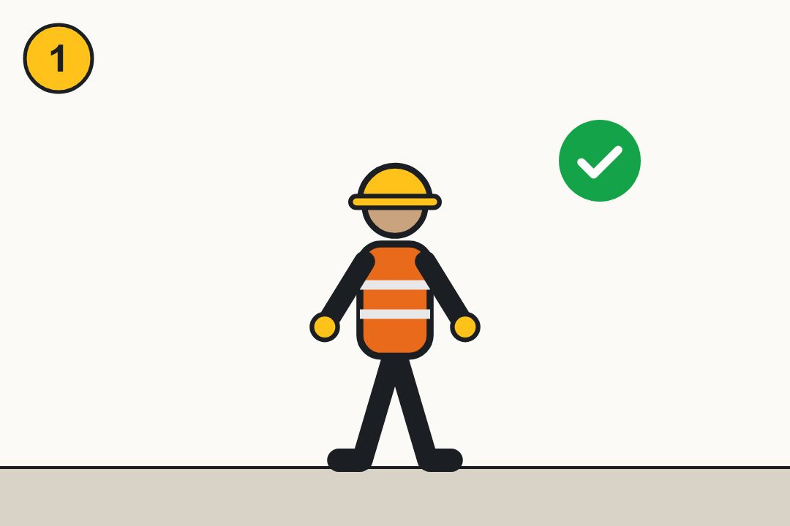
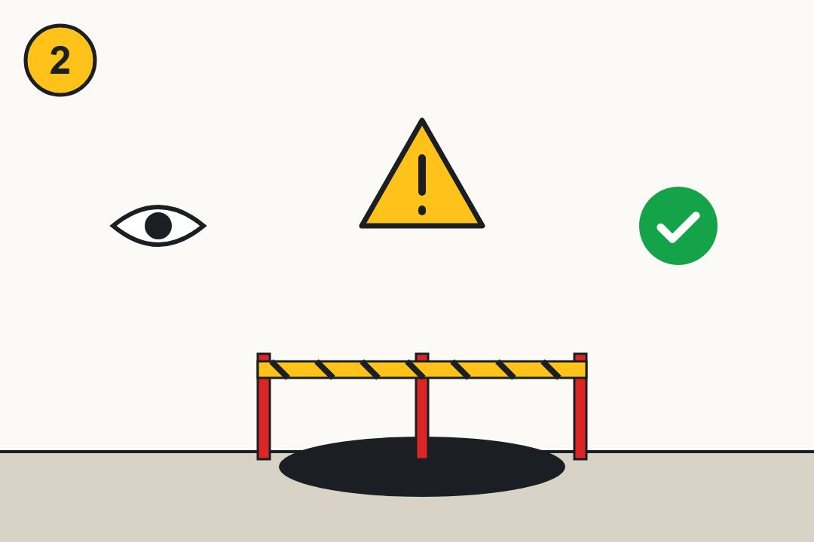
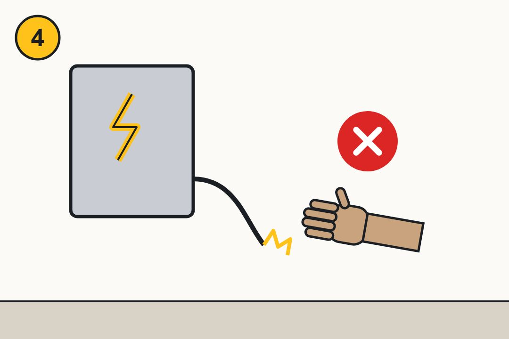
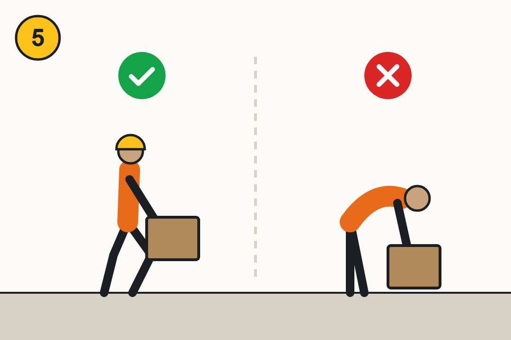
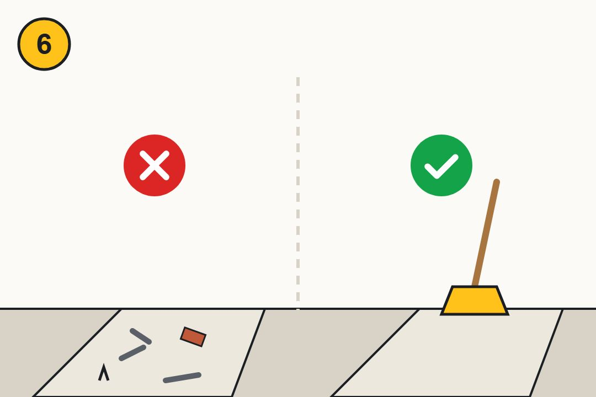
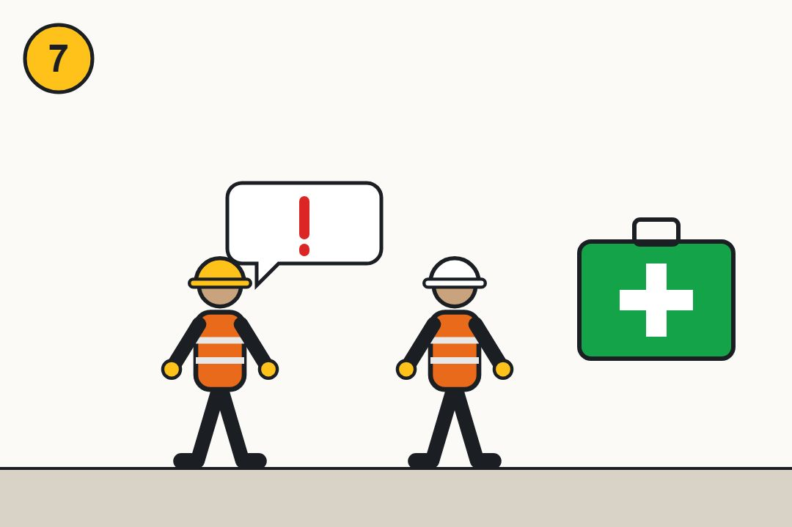

Content review · SS-SAF-01 · Construction Site Safety – Basic Precautions
Draft for expert review. Text was drafted with an AI assistant and edited by the developer. Pictures are simple drawings without words (real site photos may replace them). Please mark anything unsafe, wrong or different from local practice. Workers will read this in Marathi, Hindi or English, with audio. Any change you make will be applied to all three languages.
| Field | Text |
|---|---|
| Description | Simple safety habits that protect you every day on site. |
| Objective | Use basic safety equipment and safe habits every day on site. |
| Materials and tools | Helmet · Safety shoes · Gloves · Reflective jacket · Safety harness · First-aid box |
| Duration | 5 min |
Steps (one per screen)

1. Before you enter the work area, wear your helmet, safety shoes, gloves and jacket. Tie the helmet strap.
OK
Change
Change

2. Look at the work area first. Watch for open edges, holes, loose material and wet floors.
OK
Change
Change

3. At height, work only from strong scaffolding or a fixed ladder. Tie your harness to a strong point.
OK
Change
Change

4. Never touch loose wires or electric boards. Only the electrician repairs them.
OK
Change
Change

5. Lift heavy loads with bent knees and a straight back. Ask for help with heavy loads.
OK
Change
Change

6. Keep walkways clear. Remove nails, steel pieces and waste.
OK
Change
Change

7. Tell the supervisor at once about any danger or injury. Know where the first-aid box is.
OK
Change
Change
Safety and common mistakes
Safety precautions
- For work at height, electrical work or any injury: stop and ask your supervisor or engineer.
- Never remove a guard rail or a cover over a hole.
- Do not stand or work under a load being lifted.
- Do not run or play on site.
Common mistakes
- Carrying the helmet instead of wearing it
- Wearing a harness but not tying it
- Working near an open edge without a barrier
- Hiding small injuries
- Using a broken ladder
Quiz (correct answer in green)
| # | Question and options | Explanation shown to worker | OK? |
|---|---|---|---|
| 1 | When should you wear your helmet? A Only when the supervisor is near · B All the time in the work area · C Only on the top floor · D Only when it rains | Things can fall at any time. Wear the helmet with the strap tied whenever you are in the work area. | |
| 2 | At height, what must you do with your safety harness? A Keep it in your bag · B Wear it loose · C Tie it to a strong point · D Give it to a friend | A harness saves you only if it is tied to a strong point. If it is not tied, it cannot stop a fall. | |
| 3 | You see a loose electric wire. What should you do? A Do not touch it; tell the supervisor · B Fix it yourself with tape · C Move it with your hand · D Pour water on it | Electric shock can kill. Keep away and tell the supervisor, so the electrician can repair it. | |
| 4 | How should you lift a heavy load? A Bend your back and pull fast · B Lift it with one hand · C Throw it up · D Bend your knees and keep your back straight | Your legs are stronger than your back. Bent knees and a straight back protect your back from injury. | |
| 5 | You get a small cut at work. What should you do? A Hide it and keep working · B Wash it with cement water · C Tell the supervisor and use the first-aid box · D Wait until evening | Even small cuts can get infected. Tell the supervisor and clean it with the first-aid box. |
Values to confirm
| Value or rule | OK / change to |
|---|---|
| PPE list: helmet, safety shoes, gloves, reflective jacket, harness at height | |
| Harness tied to a strong point (anchor rule on this site) | |
| Lifting: bent knees, straight back, ask for help | |
| Only the electrician touches boards and wires | |
| First-aid: tell supervisor at once; first-aid box location known | |
| Any site rule missing (e.g. permit to work, barricading)? |
Other comments
Sign-off
| Decision | Approved Approved with the changes above Not approved |
| Reviewer name | |
| Qualification / role | |
| Date and signature | |
| May we show "Reviewed by: name, qualification" in the app? | Yes No |